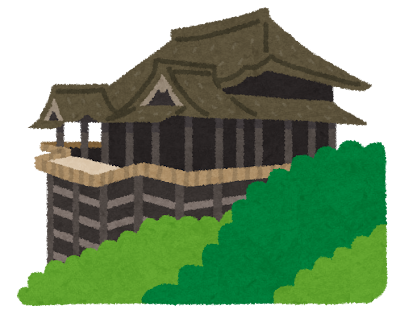

清水寺

清水寺は、京都市東山区にある歴史的な寺院です。
この寺は、世界文化遺産に登録されています。
清水寺の本堂は、舞台からの眺めが美しく、季節を問わず多くの観光客が訪れます。
基本情報
住所: 〒605-0862 京都市東山区清水1丁目294
アクセス: 京都市交通局（市バス）206系統・東山通北大路バスターミナルゆき、100系統清水寺祇園 銀閣寺ゆきで五条坂下車、徒歩10分
開館時間: 6:00～18:00
料金: 大人 500円、小中学生 200円
公式サイト: 音羽山 清水寺